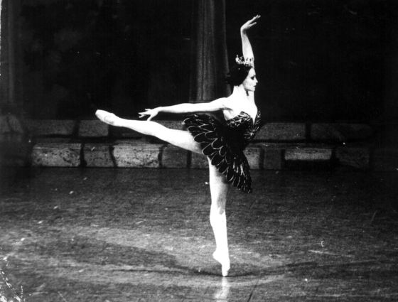

Rosario Suárez
Rosario Suárez es una exitosa bailarina clásica que nació en La Habana, Cuba. En su trayectoria profesional ha recibido importantes reconocimientos y premios
Resumen de su trayectoria profesional
- 2002-2006: Directora y Bailarina del Ballet Rosario Suárez.
- 1999-2006: Directora y Bailarina de la Academia Rosario Suárez.
- 1987-1990: Primera Bailarina del Ballet Teatro de La Habana.
- 1968-1994: Primera Bailarina del Ballet Nacional de Cuba.

Premios
- 1997, ACCA Premio por la creación del Ballet Cubano de Miami. Miami, USA.
- 1997, Mejor Solo. Éxito Magazine. Miami, USA.
- 1997, Premio a la Excelencia Artística. The Miami Herald. Miami, USA.
Detrás de su éxito, de su virtuosa técnica, de su calidad interpretativa y de su carisma, se oculta una pasión desenfrenada. Las dificultades, la honestidad, la búsqueda constante de la libertad y como no, su misterio, la han convertido en uno de las grandes mitos del arte cubano.